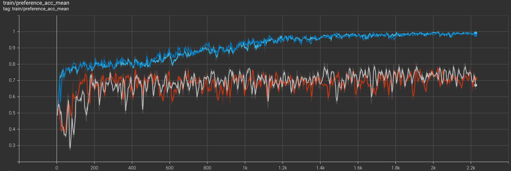
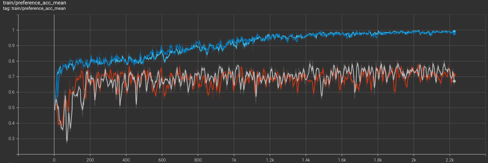
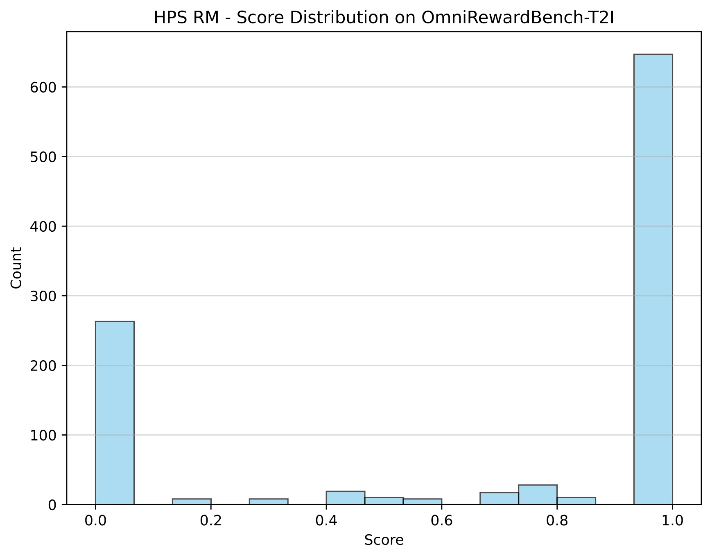
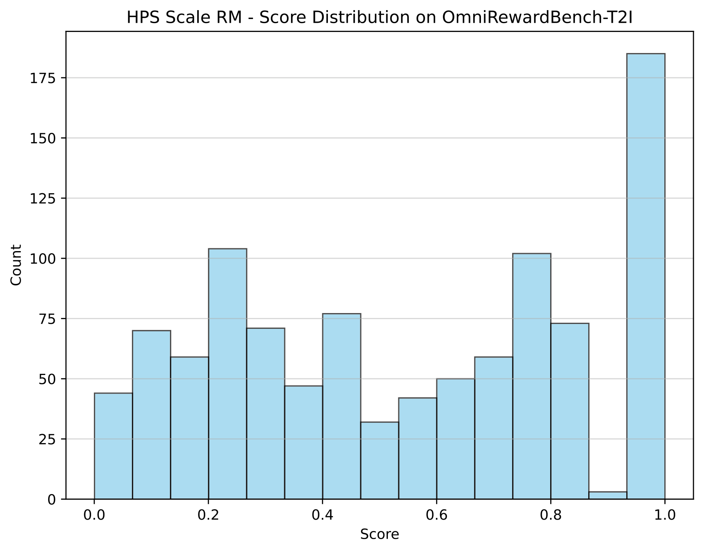
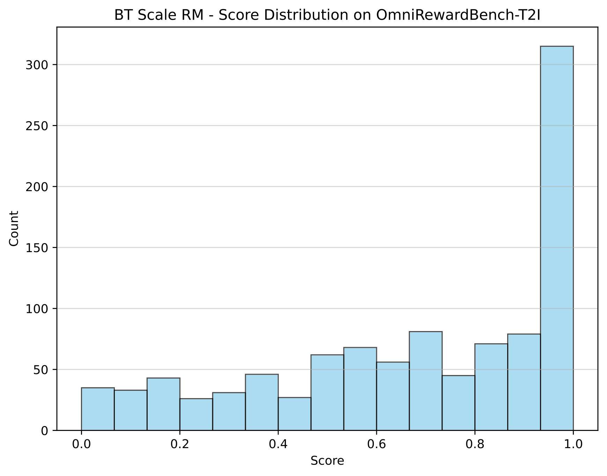
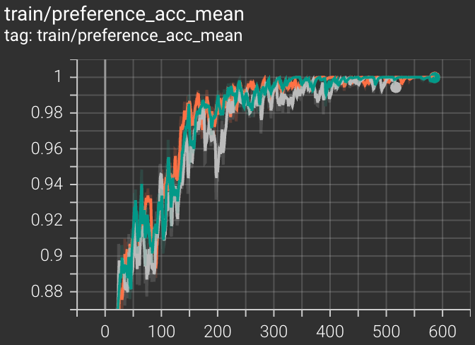
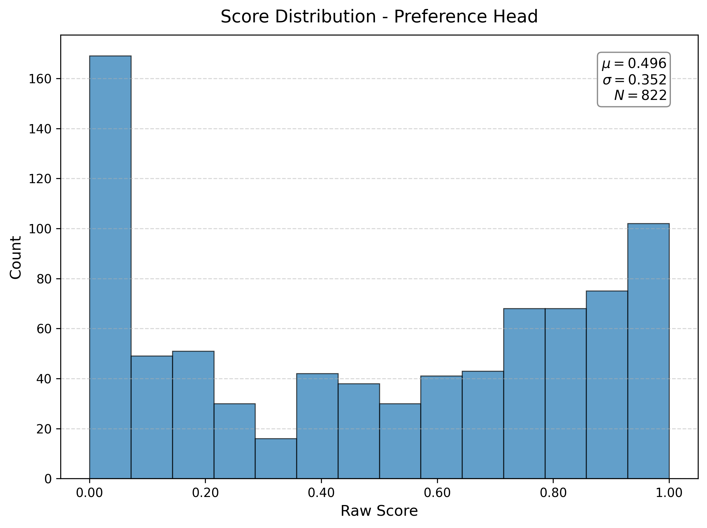
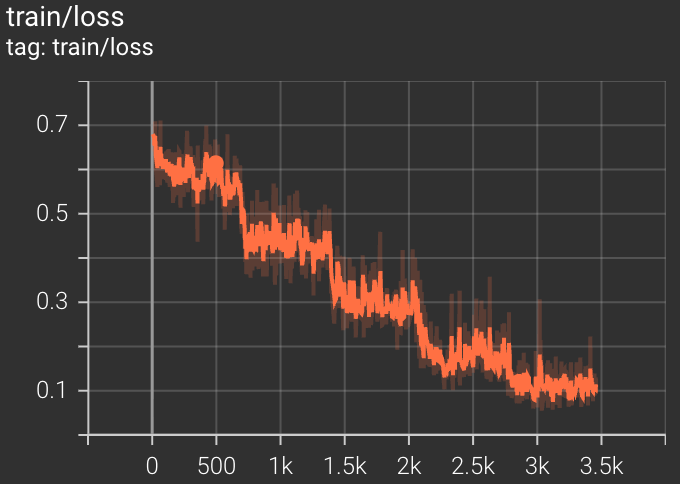

LightRFT Reward Model Training Best Practices Guide¶
Table of Contents¶
Overview
Reward Model Types
Environment Preparation
Model Training
Model Evaluation
FAQ
Benchmarks & Performance
Advanced Topics
References
1. Overview¶
1.1 What is a Reward Model¶
In the workflow of Reinforcement Learning from Human Feedback (RLHF), the Reward Model plays the critical role of a proxy for human preferences.
Why is a Reward Model needed? In many complex task scenarios, we face the challenge that reward functions are difficult to define explicitly with simple rules. For example:
Generation Tasks: How to use a formula to measure the literary talent of a text or the aesthetic beauty of an image?
Interaction & Control: How to define the comfort of driving or the naturalness of a robot’s movements?
Although humans can subjectively judge these results, obtaining real-time human feedback during large-scale training is both expensive and time-consuming. Therefore, we need to train a Reward Model to simulate human judgment standards.
The Role of the Reward Model The Reward Model receives an input (such as a Prompt or environmental state) and its corresponding output (Response or action), and outputs an evaluation signal. This signal quantifies the extent to which the result meets human expectations (such as helpfulness, safety, truthfulness, etc.), thereby providing scalable, consistent feedback guidance for the optimization of the Policy Model.
Based on different output forms, Reward Models are mainly divided into two categories:
Scalar Reward Model (SRM): This is the most classic form of reward model. It maps the input and response to a single scalar score. The advantage of SRM is high computational efficiency, and the numerical signal output can be directly used as the Reward in reinforcement learning algorithms (such as PPO) or for Rejection Sampling. However, a single scalar is often difficult to interpret regarding the basis of the model’s scoring, and it is difficult to capture complex multi-dimensional preferences.
Generative Reward Model (GRM): This is an emerging paradigm of reward models. GRM leverages the generation capabilities of large language models to output evaluations in natural language. It can not only give a final judgment (e.g., “Answer A is better”) but also generate a detailed Chain-of-Thought (CoT) to explain the reasoning behind the evaluation. GRM possesses stronger interpretability and, by simulating the human reasoning process, often demonstrates higher accuracy in complex evaluation tasks.
The reward signal given by the Reward Model (whether a scalar or a result parsed from text) will be used to guide the optimization of the Policy Model. By maximizing the reward given by the RM, the Policy Model can learn to generate content that aligns better with human preferences and values. Therefore, the quality of the Reward Model directly determines the final alignment effect and serves as a key bridge for aligning large model generation behaviors with human preferences.
1.2 RM Support in LightRFT¶
LightRFT provides a complete multi-modal reward model training framework, supporting:
Model Types:
Scalar Reward Model (SRM): Scalar reward model, outputs a scalar score (between 0-1).
Generative Reward Model (GRM): Generative reward model, generates text-based evaluations with reasoning processes (CoT) and final conclusions (e.g.,
<think>…</think><answer>…</answer>), offering better interpretability.
Supported Modalities:
Vision-Language (VL): Image-Text, Video-Text
Audio-Language (AL): Audio-Text
Language-Only: Pure text, i.e., existing LLM models
Training Backend:
DeepSpeed ZeRO (Stage 1/2/3)
2. Reward Model Types¶
2.1 Scalar Reward Model (SRM)¶
Features¶
Outputs a single scalar score (mapped to 0-1 via Sigmoid).
Training uses pairwise preference data.
Supports multiple reward heads (e.g., preference, alignment, helpfulness).
Applicable Scenarios¶
Scenarios requiring fast inference.
As a reward signal for RL algorithms like PPO/GRPO.
Multi-dimensional preference modeling.
Loss Functions¶
Bradley-Terry Loss (Log-Sigmoid):
-log(σ(r_chosen - r_reject - margin))LogExp Loss:
log(1 + exp(r_reject - r_chosen))HPS Scale Loss: Cross-entropy with learnable temperature (performed better in our experiments).
Architecture¶
Backbone (e.g. Vision-Language Model)
↓
Hidden States (from probing_layer)
↓
Pooling (Attention or Last Token)
↓
Reward Head (MLP + Sigmoid)
↓
Scalar Score (0-1)
2.2 Generative Reward Model (GRM)¶
Features¶
Generates evaluations and reasons in text form.
Training uses standard language model loss (Next-Token Prediction).
Strong interpretability.
Applicable Scenarios¶
Scenarios requiring evaluation reasoning.
Fine-grained evaluation of complex tasks.
Research and analysis of model behavior.
Training Methods¶
GPT-LM Loss: Standard next-token prediction loss.
Reinforcement Fine-Tuning (RFT): Training using reinforcement learning to improve the reasoning capability of the GRM. This module is currently under development in LightRFT, stay tuned.
Architecture¶
Multi-modal Encoder (e.g. Vision2Seq Model)
↓
LLM Decoder
↓
Generated Text (Reward Description)
2.3 Selection Advice¶
Scenario |
Recommended Type |
Reason |
|---|---|---|
PPO/DPO Training |
SRM |
Fast inference speed, scalar signal is easy to use |
Complex Task Evaluation |
GRM |
Can generate detailed evaluation reasons |
Multi-dimensional Preference |
SRM/GRM (Multi-head) |
Can train multiple dimensions simultaneously |
High Interpretability Required |
GRM |
Provides textual explanation |
Real-time Application |
SRM |
Low inference overhead |
3. Environment Preparation¶
3.1 Installation¶
cd LightRFT
# Install basic dependencies
pip install -r requirements.txt
# For Vision-Language Models
pip install qwen-vl-utils # Qwen-VL Series
pip install keye-vl-utils # KeyeVL Series
# For Audio-Language Models
pip install librosa
3.2 GPU Requirements¶
Minimum Configuration:
SRM (3B Model, Full Fine-tuning): 1x H200/A100 (80GB)
SRM (7B Model): 1x H200 with ZeRO-3
GRM (3B Model): 1x H200 with ZeRO-3
GRM (7B Model): 2x H200 with ZeRO-3
Recommended Configuration:
8x A100 (80GB) for 7B-72B models
Use ZeRO-3 + LoRA for larger models
4. Model Training¶
LightRFT provides out-of-the-box training scripts supporting both SRM and GRM training. We have prepared ready-to-run scripts with default configurations for common scenarios; customized parameters are also supported to fit your experiments.
4.0 One-Click Run (SRM / GRM)¶
Quick Start: Modify the data path and save directory in the script as needed, then run directly.
# First enter the LightRFT root directory
cd LightRFT
# Train SRM for Vision-Language Models
bash examples/srm_training/run_srm_vl.sh
# Train SRM for Audio-Language Models
bash examples/srm_training/run_srm_al.sh
# Train GRM for Vision-Language Models
bash examples/grm_training/run_grm_vl.sh
Notes:
The scripts have built-in recommended configurations.
Supports single-node multi-GPU execution, launched by
torchrunby default; for distributed multi-node execution, please set environment variables likeNNODES,MASTER_ADDR/PORTat the top of the script according to the comments.
Below are the detailed commands and key parameter explanations based on our experimental settings.
4.1 Training Scalar Reward Model (SRM)¶
4.1.1 Basic Training Script (Based on T2I Experiment)¶
#!/bin/bash
# Set environment variables
export GPUS_PER_NODE=2 # Number of GPUs per node
export NNODES=1 # Number of nodes
export NODE_RANK=0 # Rank of the current node
export MASTER_ADDR=127.0.0.1 # Master node address
export MASTER_PORT=29500 # Master node port
# Training parameters
PRETRAIN="Qwen/Qwen2.5-VL-3B"
# Use HPDv3 Train Set and Test Set
TRAIN_DATA="/path/to/hpdv3/train.json"
EVAL_DATA="/path/to/hpdv3/test.json"
SAVE_PATH="./checkpoints/srm_qwen2.5vl_3b_hpdv3"
# Set Task Instruction
TASK_INSTRUCTION="Your will act as an expert image evaluator for text-to-image generation.
Given a text prompt and a generated image, your task is to assess the overall quality of the image in relation to the prompt.
Your evaluation should focus on the following key aspects:
• Preference: Which image would a human viewer find more satisfying or visually appealing overall.
• Alignment: How well the image content matches the given text prompt in semantics, objects, and attributes.
Your task is provided in the following, please give your judgement based on above criteria.
The prompt used for generation is as follows: {prompt}.
"
# Start training
set -x
torchrun --nnodes $NNODES --nproc-per-node $GPUS_PER_NODE --node_rank $NODE_RANK --master-port $MASTER_PORT --master-addr $MASTER_ADDR \
examples/demo_srm_training/train_srm_vl.py \
--pretrain $PRETRAIN \
--train_data $TRAIN_DATA \
--save_path $SAVE_PATH \
--ckpt_path $SAVE_PATH \
--train_batch_size 32 \
--micro_train_batch_size 2 \
--max_epochs 5 \
--actor_learning_rate 1e-5 \
--lr_warmup_ratio 0.05 \
--prompt_max_len 2048 \
--pooling_method attn \
--probing_layer -1 \
--heads_types preference \
--scale_for_train \
--margin 0.1 \
--task_instruction "$TASK_INSTRUCTION" \
--loss_type hps \
--zero_stage 2 \
--bf16 \
--flash_attn \
--gradient_checkpointing \
--logging_steps 1 \
--save_steps 100 \
--use_wandb "your_wandb_key" \
--wandb_project "reward_model_training"
4.1.2 Key Parameter Explanation¶
Model Parameters:
--pretrain: Path to the pre-trained model.Qwen/Qwen2.5-VL-3Bis used in the experiment.--pooling_method:attn: Use attention pooling (Used in experiment, Recommended).last: Use the last token.
--probing_layer: From which layer to extract features as input for the reward head.-1: The last layer (Used in experiment, Default).17: The 17th layer (can be tried as a variant).
--heads_types: Reward head types, defaults to onlypreference. Can be set to multiple dimensions, e.g.,preference alignment coherence. Ensure the data contains corresponding labels.
Training Parameters:
--train_batch_size: Global batch size. T2I experiment set to32, T2V experiment set to8.--micro_train_batch_size: Batch size per GPU.--actor_learning_rate: Learning rate.1e-5is used for full fine-tuning in experiments.--video_fps: Sampling frame rate for video data, set to2.0in T2V experiments.--scale_for_train: Enable learnable scaling factor during training.--margin: Margin value used in BT Loss, invalid for HPS and LogExp.
Prompt Related:
--task_instruction: Task instruction to guide the reward model in understanding evaluation criteria. Set to the example content above for T2I in experiments.
Training Logging: LightRFT supports multiple training logging methods:
--use_wandb: Enable Weights & Biases for training logging.--use_tensorboard: Enable TensorBoard for training logging and save to the specified path. Enable by adding--use_tensorboard "path/to/logs".
Loss Function:
--loss_type:hps: Use HPS Scale Loss (Used in experiment, Default).sigmoid: Use BT (Bradley-Terry) Loss.logexp: Use LogExp Loss.
4.1.3 LoRA Training¶
For large models (> 7B) or VRAM-constrained situations, using LoRA is recommended:
python examples/demo_srm_training/train_srm.py \
--pretrain "Qwen/Qwen2.5-VL-72B-Instruct" \
... \
--lora_rank 64 \
--lora_alpha 128 \
--lora_dropout 0.1 \
--target_modules all-linear \
--zero_stage 2
4.2 Training Generative Reward Model (GRM)¶
4.2.1 Basic Training Script (Based on T2I Experiment)¶
#!/bin/bash
PRETRAIN="Qwen/Qwen2.5-VL-3B"
TRAIN_DATA="/path/to/ImageGen-CoT-Reward-5K.json"
SAVE_PATH="./checkpoints/grm_qwen2.5vl_3b"
torchrun --nnodes $NNODES --nproc-per-node $GPUS_PER_NODE --node_rank $NODE_RANK --master-port $MASTER_PORT --master-addr $MASTER_ADDR \
examples/demo_grm_training/train_grm_vl.py \
--pretrain $PRETRAIN \
--train_data $TRAIN_DATA \
--save_path $SAVE_PATH \
--ckpt_path $SAVE_PATH \
--train_batch_size 4 \
--micro_train_batch_size 1 \
--max_epochs 2 \
--actor_learning_rate 1e-5 \
--prompt_max_len 4096 \
--zero_stage 2 \
--bf16 \
--flash_attn \
--gradient_checkpointing \
--logging_steps 10 \
--save_steps 500
Notes:
GRM usually requires a longer sequence length (
--prompt_max_len 4096) to accommodate CoT text.Due to the long sequence, the batch size needs to be reduced accordingly;
4is used in experiments.The learning rate is consistent with the SRM experiment (
1e-5).
5. Model Evaluation¶
5.1 Model Conversion¶
Our training scripts use DeepSpeed ZeRO as the training engine by default. DeepSpeed formatted checkpoints are saved during training, so they need to be converted to the standard HuggingFace format for inference and evaluation.
For SRM models, we recommend using the following script for conversion:
python examples/ckpt_scripts/ds2hf.py \
--hf_base /path/to/base/model \
--model_type srm_vl \
--checkpoint_dir /path/to/deepspeed/checkpoint/dir \
--output_dir /path/to/output/huggingface/output/dir \
--scale_for_train \
--pooling_method attn \
--heads_types preference
For GRM models, the following script can be used for conversion:
python examples/ckpt_scripts/ds2hf.py \
--hf_base /path/to/base/model \
--model_type grm \
--checkpoint_dir /path/to/deepspeed/checkpoint/dir \
--output_dir /path/to/output/huggingface/output/dir
5.2 Evaluation Data Preparation¶
The evaluation data format is the same as the training data but should be an independent test set.
Evaluation sets used in experiments:
Text-to-Image (T2I) Tasks
OmniReward-Bench-T2IHPDv3 Test SetImageRewardDB Test SetGenAI-Bench
Text-to-Video (T2V) Tasks
OmniReward-Bench-T2V
Text-to-Audio (T2A) Tasks
OmniReward-Bench-T2A
5.3 Evaluation Script Example¶
We provide evaluation scripts test_srm_vl.py and test_grm_vl.py in the examples/demo_srm_training and examples/demo_grm_training directories respectively, for benchmarking SRM and GRM. The evaluation scripts implement corresponding Evaluator classes for different benchmarks. Implementing custom Evaluators to adapt to new evaluation needs is supported.
Additionally, specifying evaluation data in the training script is also supported to implement periodic evaluation during the training process:
--eval_data "/path/to/your/eval.json" \
--eval_steps 100 # Evaluate every 100 steps
When enabled, evaluation will be performed at the specified steps during training, and the results will be recorded in a jsonl file under the save_path.
5.4 Evaluation Metrics¶
5.4.1 SRM Evaluation¶
Accuracy: The proportion where score of chosen sample > score of reject sample. This is the core metric in our experiments.
Mean Reward Gap:
mean(score_chosen - score_reject).Score Distribution: Analyze the distribution of scores given by the model for chosen/rejected samples.
5.4.2 GRM Evaluation¶
Ranking Accuracy: Calculate consistency with real preferences by parsing the
<answer>tag in the generated text.
5.5 Benchmarks¶
We conducted a series of benchmarks based on the Qwen2.5-VL-3B model. For detailed settings and results, please refer to Section 7: Benchmarks & Performance.
6. FAQ¶
6.1 Training Issues¶
Q1: OOM (Out of Memory)¶
Solutions:
Reduce batch size:
--micro_train_batch_size 1.Enable gradient checkpointing:
--gradient_checkpointing.Use higher ZeRO stage:
--zero_stage 3 --adam_offload.Use LoRA:
--lora_rank 32.Reduce sequence length:
--prompt_max_len 1024.Use BF16/FP16:
--bf16.
Q2: Unstable Training/Loss Not Decreasing¶
Possible Causes and Solutions:
Inappropriate Learning Rate: For full fine-tuning,
1e-5is a good starting point. If the model is larger or data is scarce, try5e-6or1e-6.Data Issues: Check if data cleaning steps are adequate and labels are accurate.
Gradient Explosion: Try adding gradient clipping.
Insufficient Warmup: Ensure
--lr_warmup_ratiois set reasonably (e.g.,0.05).
6.2 Inference Issues¶
Q3: How to use the trained model for inference¶
We provide inference script examples for SRM and GRM in examples/demo_srm_training/srm_vl_inference.py and examples/demo_grm_training/grm_vl_inference.py.
Please refer to the usage instructions in the scripts, modify the model path and input data as needed to perform inference.
6.3 Dataset Issues¶
Q4: How to use your own dataset for training¶
LightRFT uses the Data Handler pattern, supporting various datasets by implementing corresponding Data Handler classes for different datasets, thereby achieving flexible data loading and preprocessing.
Implement a Custom Data Handler¶
Inherit BaseDataHandler: Create a new Python class inheriting from
lightrft.datasets.BaseDataHandler.Implement Necessary Methods:
load_data: Load all data items from data configuration files (like json, parquet, etc.) or folders. Return a list of raw data items.get_media_info: Extract path information of all media information (images, videos, and audio, etc.) from raw data items.parse_item: Parse raw data items and loaded visual content into standard formats suitable for model input, and return a dictionary containing other necessary information such as labels.
Register Data Handler: Register your Data Handler class in the
self.handlersdictionary insrm_datasetorgrm_datasetof thelightrft.datasetsmodule.
Data Format¶
SRM Data Format¶
A typical format example (JSON Lines):
{
"prompt": "A beautiful sunset over the ocean",
"image_0": "/path/to/image0.jpg",
"image_1": "/path/to/image1.jpg",
"preference": "A",
"alignment": "B"
}
Label Explanation: We use the following labels for preference training.
"A": image_0/response_0 is better"B": image_1/response_1 is better"C": Both are comparable
GRM Data Format¶
GRM training data needs to include text evaluations generated by the model, typically containing Chain-of-Thought and final conclusions, to facilitate supervised fine-tuning training based on Next-Token Prediction.
A data format example (JSON Lines):
{
"prompt": "Describe this image",
"image_0": "/path/to/image0.jpg",
"image_1": "/path/to/image1.jpg",
"response": "<think>Reasoning here</think><answer>Image 1 is better</answer>"
}
Typically, response contains <think> and <answer> tags for training the model to generate structured evaluations and final judgments, and to facilitate text parsing.
You can also design different tagging systems according to your needs.
Dataset Organization¶
Recommended Directory Structure:
/data/reward_model/
├── datasets/
│ ├── HPDv3/
│ │ ├── train.json
│ │ ├── test.json
│ │ └── images/
│ │ ├── img_001.jpg
│ │ ├── img_002.jpg
│ │ └── ...
│ │
│ ├── ImageGen-CoT-Reward-5K/
│ │ ├── train.json
│ │ └── images/
│ │ ├── img_001.jpg
│ │ ├── img_002.jpg
│ │ └── ...
│ │
│ ├── rapidata-text-2-video-human-preferences-pika2.2/
│ │ ├── train.parquet
│ │ └── videos/
│ │ ├── vid_001.mp4
│ │ ├── vid_002.mp4
│ │ └── ...
│ │
└── ...
Data Preprocessing¶
Visual Data Preprocessing¶
Images should be stored in JPEG/PNG/webp format.
Recommended resolution: 224x224 to 1024x1024.
Video frame rate: Set to 2.0 FPS in experiments (specified via –fps in config).
Data Cleaning¶
Must Check:
✅ Do all file paths exist?
✅ Are labels valid (A/B/C)?
✅ Are images readable?
✅ Does text contain special characters?
Example Script:
import json
from pathlib import Path
from PIL import Image
def validate_dataset(json_path):
with open(json_path) as f:
for line_no, line in enumerate(f, 1):
item = json.loads(line)
# Check according to your data format...
# ...
7. Benchmarks & Performance¶
This section provides preliminary experimental results for SRM and GRM models based on the LightRFT framework, which can serve as a performance reference for training.
7.1 Scalar Reward Model (SRM) Experiments¶
7.1.2 Text-to-Image (T2I) Task Performance¶
Experimental Settings
Base Model:
Qwen2.5-VL-3BTraining Method: Full fine-tuning
Batch Size: Global Batch Size
32, Micro Batch Size per card4Max Training Epochs: All experiments trained for
5Epochs. We evaluate the checkpoint at 2000 global steps.Learning Rate:
1e-5Reward Head: Single Preference Head, outputs overall preference score
Hardware: Dual NVIDIA H200 (140GBx2)
Task Instruction:
Your will act as an expert image evaluator for text-to-image generation. Given a text prompt and a generated image, your task is to assess the overall quality of the image in relation to the prompt. Your evaluation should focus on the following key aspects: • Preference: Which image would a human viewer find more satisfying or visually appealing overall. • Alignment: How well the image content matches the given text prompt in semantics, objects, and attributes. Your task is provided in the following, please give your judgement based on above criteria. The prompt used for generation is as follows: {prompt}.
Training Data:
HPDv3 Subset: Approximately ~57K pairs randomly sampled from HPDv3-Train. Original HPDv3 contains about 1.17M pairs; due to resource constraints, we used a subset for training.
Evaluation Data:
OmniReward-Bench-T2I: Text-to-Image evaluation subset in OmniReward-Bench.
HPDv3 Test Set: The test set part of the HPDv3 dataset.
ImageRewardDB Test Set: The test set part of the ImageRewardDB dataset.
Test Results:
Model Variant |
Loss Function |
Scale for Train |
Pooling Method |
Probing Layer |
OmniReward-Bench-T2I (Acc) |
HPDv3 Test (Acc) |
ImageRewardDB (Acc) |
|---|---|---|---|---|---|---|---|
HPS |
HPS |
No |
attn |
-1 |
31.83% |
53.84% |
41.93% |
BT |
BT |
No |
attn |
-1 |
30.06% |
60.54% |
42.51% |
BT Scale |
BT |
Yes |
attn |
-1 |
53.83% |
69.74% |
58.98% |
HPS Scale |
HPS |
Yes |
attn |
-1 |
55.21% |
72.35% |
61.37% |
HPS + BT Scale |
HPS + BT |
Yes |
attn |
-1 |
56.19% |
68.86% |
59.48% |
HPS Scale Probing 17 |
HPS + BT |
Yes |
attn |
17 |
55.21% |
71.4% |
57.37% |
HPS Scale Last |
HPS + BT |
Yes |
last |
-1 |
48.92% |
70.10% |
59.12% |
— |
— |
— |
— |
— |
— |
— |
— |
Baseline: HPSv3 (Qwen2VL-7B) |
- |
- |
- |
- |
76.9% |
66.8% |
- |
Baseline: ImageReward (BLIP) |
- |
- |
- |
- |
58.6% |
65.1% |
- |
Training Logs:
Comparison of training with different loss functions:
HPS Loss (Red line) vs. BT (Grey line) vs. HPS Scale (Light blue line) vs. BT Scale (Dark blue line)
 
Observations:
For both HPS and BT loss functions, enabling the learnable scaling factor (Scale for Train) significantly improved training stability and final performance.
With Scale for Train enabled, the loss function curves of HPS and BT are basically consistent, but in terms of evaluation accuracy, HPS plus Scale significantly outperforms BT.
Pooling Method Comparison:
We compared different Pooling methods on the HPS Scale configuration.
Attention Pooling (Light blue line) vs. Last Token Pooling (Pink line)
Observations: From the training loss curves, the convergence speed of the two pooling methods is similar, but in terms of evaluation accuracy, Attention Pooling is significantly better than Last Token Pooling.
Probing Layer Comparison:
We compared different Probing Layers on the HPS Scale configuration. Using Last Layer (Light blue line) vs. Middle Layer 17 (Orange line)
Observations: The training loss curves of both Probing Layers are quite close. However, in terms of evaluation accuracy, using the features of the last layer is better than the middle layer.
Score Distribution:
We visualized the score distribution of different models on OmniReward-Bench-T2I and HPDv3 Test datasets. It is quite obvious that without enabling Scale for Train, the model tends to give extreme scores (close to 0 or 1), while after enabling Scale for Train, the distribution of sample scores is more uniform.
Score Distribution on HPDv3 Test Dataset:
Score Distribution on OmniReward-Bench-T2I Dataset:






Conclusions and Analysis:
Loss Function Selection: On T2I tasks, BT Loss is significantly better than HPS Loss. Using BT Loss with learnable temperature scaling (BT Scale) further improved performance. The hybrid loss combining HPS and BT (HPS + BT Scale) achieved the best results on OmniReward-Bench-T2I (56.39%).
Learnable Scaling Factor: Enabling
Scale for Train(learnable scaling factor) significantly improved model performance, indicating that dynamically adjusting the distribution of reward scores is crucial for training more effective reward models. Specifically, HPS Loss improved significantly after enabling scaling, reaching 72.35% and 61.37% accuracy on HPDv3 Test and ImageRewardDB respectively.Pooling Method: Attention Pooling significantly outperforms Last Token Pooling, indicating that weighted aggregation of tokens across the entire sequence helps improve the discriminative ability of the reward model.
Probing Layer Selection: Using features from the last layer (-1) and the middle layer (17) as input to the reward head showed similar results, but the last layer was slightly better.
Performance Comparison: Our 3B model, under the HPS Scale configuration and trained only on a small subset of data extracted from HPDv3, achieved 72.35% and 61.37% accuracy on HPDv3 Test and ImageRewardDB respectively, approaching previous SOTA results based on 7B models (76.9% and 66.8% respectively). This demonstrates the significant advantage of the LightRFT framework in training efficient and high-performance reward models.
7.1.3 Text-to-Audio (T2A) Task Performance¶
We conducted preliminary experiments for the T2A task using the HPS Scale configuration which performed best in the T2I task.
Experimental Settings
Training Method: Full fine-tuning
Batch Size: Global Batch Size
32, Micro Batch Size per card4Max Training Epochs: All experiments trained for
5Epochs. Checkpoint at 500 global steps taken for evaluation.Learning Rate:
1e-5Reward Head: Single Preference Head, outputs overall preference score
Hardware: Dual NVIDIA H200 (140GBx2)
Task Instruction:
You will act as an expert audio evaluator for text-to-audio generation. Given a text prompt and a generated audio clip, your task is to assess the overall quality of the audio in relation to the prompt. Your evaluation should focus on the following key aspects: • Preference: Which audio would a human listener find more satisfying or acoustically pleasing overall (considering audio fidelity, clarity, and musicality/naturalness). • Alignment: How well the audio content matches the given text prompt in semantics, sound events, mood, and acoustic attributes (e.g., genre, tempo, instruments). Your task is provided in the following, please give your judgement based on above criteria. The prompt used for generation is as follows: {prompt}.
Training Data:
Audio-Alpca: Contains 15K text-to-audio generation preference data.
Evaluation Data:
OmniReward-Bench-T2A: Text-to-Audio evaluation subset in OmniReward-Bench.
Test Results:
Variant |
Base Model |
Training Data |
Loss Function |
OmniReward-Bench-T2A (Acc) |
|---|---|---|---|---|
Qwen2.5-Omni-HPS |
Qwen2.5-Omni-3B |
Audio-Alpca |
HPS |
69.10% |
Qwen2-Audio-HPS |
Qwen2-Audio-7B |
Audio-Alpca |
HPS |
70.07% |
MiniCPM_o-HPS |
MiniCPM-o 2.6 |
Audio-Alpca |
HPS |
70.32% |
— |
— |
— |
— |
— |
Baseline: Qwen2.5-Omni-7B |
- |
- |
- |
50.76% |
Baseline: Gemini-2.0-Flash |
- |
- |
- |
60.86% |
Baseline: Gemini-2.5-Flash |
- |
- |
- |
60.10% |
Baseline: Gemini-2.5-Pro |
- |
- |
- |
65.41% |
Baseline: Omini-RewardModel-BT |
- |
- |
BT |
66.41% |
Training Logs:
Qwen2.5-Omni-HPS (Grey line) vs Qwen2-Audio-HPS (Orange line) vs MiniCPM_o-HPS (Green line)
Training Loss Curve

Accuracy Curve 
Score Distribution:
We visualized the score distribution of the model on the OmniReward-Bench-T2A dataset.
Qwen2.5-Omni-HPS 
Qwen2-Audio-HPS

MiniCPM_o-HPS

Conclusions and Analysis:
Performance: Preliminary experimental results indicate that the LightRFT framework can be effectively applied to Text-to-Audio (T2A) tasks. Reward models trained with
HPS Lossacross various base models achieved stable and significant performance improvements. Notably,MiniCPM_o-HPSreached a peak accuracy of 70.32% on theOmniReward-Bench-T2Abenchmark, demonstrating the best overall performance.Surpassing Baselines: Compared to existing strong baselines, models trained under the LightRFT framework significantly outperform commercial general-purpose models like
Gemini-2.5-Pro(65.41%) and specialized reward models likeOmini-RewardModel-BT(66.41%). This result validates the effectiveness of LightRFT in audio reward modeling scenarios.Framework Versatility: The consistent performance gains across different model architectures (Qwen2.5-Omni, Qwen2-Audio, MiniCPM-o) further demonstrate that the LightRFT framework possesses excellent versatility and can stably support audio-language preference modeling tasks.
7.1.4 Text-to-Video (T2V) Task Performance¶
Experimental Settings
Base Model:
Qwen2.5-VL-3BTraining Method: Full fine-tuning
Batch Size: Global Batch Size
32, Micro Batch Size per card4Learning Rate:
1e-5Reward Head: Single Preference Head, outputs overall preference score
Pooling Method: Attention Pooling
Probing Layer: Last layer
Scale for Train: Enabled
Video Frame Rate:
2.0FPSHardware: Dual NVIDIA H200 (140GB)
Task Instruction:
Your will act as an expert video evaluator for text-to-video generation. Given a text prompt, and a generated video, your task is to assess the generated video on the following key aspects: • Preference: How visually appealing participants found each video, independent of the prompt. • Alignment: How well an video matches its prompt. • Coherence: Whether the generated video is logically consistent and free from artifacts or visual glitches. Your task is provided in the following. Please give your judgement based on above criteria. The prompt used for generation is as follows: {prompt}.
Training Data:
Rapidata-text-2-video-human-preferences-veo3
Rapidata-text-2-video-human-preferences-pika2.2
Rapidata-text-2-video-human-preferences-wan2.1
Training Logs:
Training Loss Curve

Accuracy Curve

Test Results:
Model Variant |
Loss Function |
OmniReward-Bench-T2V (Acc) |
|---|---|---|
BT Loss (step 100) |
BT |
59.74% |
HPS Loss (step 100) |
HPS |
62.19% |
— |
— |
— |
Baseline: Omni-RewardModel-BT |
BT |
64.08% |
Conclusions and Analysis:
Preliminary experiments demonstrate that the LightRFT framework can be seamlessly extended to scalar reward model training for T2V tasks, achieving an accuracy of approximately 62% on
OmniReward-Bench-T2V, which is close to the existing SOTA baselineOmni-RewardModel-BT(64.08%).
7.2 Generative Reward Model (GRM) Experiments¶
7.2.1 Experimental Settings¶
Base Model:
Qwen2.5-VL-3BTraining Method: Full fine-tuning
Learning Rate:
1e-5Loss Function: Next-Token Prediction Loss
Training Data:
ImageGen-CoT-Reward-5K: Contains detailed CoT evaluation processes, used for training Reasoning GRM.
HPDv3 Train Subset: No CoT annotations, uses a form that directly outputs comparison results, used for training GRM without Reasoning process. (The HPDv3 here uses the same subset as Scalar RM).
Batch Size: Global Batch Size
8, Micro Batch Size per card4Hardware: Dual NVIDIA H200 (140GB)
Task Instruction:
For ImageGen-CoT-Reward-5K, we use its own CoT evaluation instructions;
For HPDv3, we use the following task instruction to guide the model to generate the final preference judgment:
You will act as an expert image evaluator for text-to-image generation. Given a text prompt and two generated images, your task is to assess the overall quality of the images and determine which one is better. Your evaluation should focus on the following key aspects: • Preference: Which image would a human viewer find more satisfying or visually appealing overall. • Alignment: How well the image content matches the given text prompt in semantics, objects, and attributes. Your response must strictly follow the format with no extra text: <answer>Image 1 is better</answer> or <answer>Image 2 is better</answer> The task is provided below. Please give your judgment based on the above criteria. The prompt used for generation is as follows: {prompt}.
7.2.2 Text-to-Image (T2I) Task Performance¶
Training Logs:
ImageGen-CoT-Reward-5K Training Loss Curve 
HPDv3 Train Subset Training Loss Curve

Test Results:
Model Variant |
Training Data |
HPDv3 Test (Acc) |
OmniReward-Bench-T2I (Acc) |
|---|---|---|---|
GRM (w/o reasoning) (step 8000) |
HPDv3 Train Subset (~56K) |
71.88% |
59.33% |
GRM (w/ reasoning) (step 3000) |
ImageGen-CoT-Reward-5K |
63.02% |
58.35% |
Conclusions and Analysis:
Impact of Data Scale: The results show that
GRM (w/o reasoning)achieved higher accuracy on both test sets (HPDv3 Test: 71.88% vs 63.02%). However, this is largely attributed to the difference in training data:GRM (w/o reasoning)used approximately 56K HPDv3 training data, whileGRM (w/ reasoning)used only 5K ImageGen-CoT data. Especially on the in-domain HPDv3 Test, the data advantage makesGRM (w/o reasoning)perform significantly better.Potential of Reasoning Capability: Despite using only 1/10th of the training data,
GRM (w/ reasoning)still demonstrated competitive performance (HPDv3 Test 63.02%). This indicates that introducing the Chain-of-Thought (CoT) reasoning process can help the model learn preference judgment more effectively with small samples.Future Directions: Currently, the performance of
GRM (w/ reasoning)is limited by the scarcity of high-quality CoT data. Future work can focus on constructing larger-scale and more diverse CoT preference datasets, or utilizing semi-supervised methods (such as RFT) to further unleash the potential of reasoning-based reward models.
8. Advanced Topics¶
8.1 Multi-task Learning¶
Multiple reward heads can be trained simultaneously to capture preferences in different dimensions:
--heads_types preference coherence alignment
In T2V tasks, we tried to train reward heads for preference, coherence, and alignment dimensions simultaneously on the Rapidata-text-2-video-human-preferences-veo3 dataset. In this setting, multi-task learning training encountered issues with multi-head crowding and gradient disappearance, leading to some heads failing to effectively learn the corresponding preference signals.
Analysis of Causes:
Task Difficulty Imbalance: The difficulty of preference judgment varies across dimensions (e.g.,
alignmentmay be easier to judge thancoherence), causing the Loss of simple tasks to drop quickly and dominate the direction of the gradient, while difficult tasks are not fully trained.Gradient Conflict: Updates to shared parameters (Backbone) from different tasks may conflict in direction, causing gradients of some tasks to be canceled out or suppressed.
Label Distribution Difference: Label distributions may vary across dimensions, causing the model to tend to fit the dominant label distribution.
Future Research Directions: To solve the above problems, future research can attempt the following directions:
Dynamic Weight Adjustment: Introduce algorithms like GradNorm to dynamically adjust Loss weights based on the learning progress of each task to balance training rates between tasks.
Gradient Correction Algorithms: Use methods like PCGrad (Projecting Conflicting Gradients) to project conflicting gradients onto the normal plane, reducing interference between tasks.
8.2 Reward Hacking¶
A key reason for the emergence of Reward Hacking is that the Reward Model is merely a fit and proxy for human preferences, not the preferences themselves. Due to the limitations of training data and model generalization errors, RMs often have Out-of-Distribution (OOD) blind spots. When the Policy Model is optimized strongly against the RM in the RL stage, it is easy to explore these blind spots and obtain extremely high reward scores through “loophole exploitation,” while the actual generation quality drops significantly.
Mitigation Strategies:
Use Generative RM: GRM itself has certain reasoning capabilities. By using larger base models and richer training data, the generalization ability of the RM can be improved to a certain extent, reducing the risk of reward hacking.
Multi-dimensional Constraints: We can train an RM that outputs fine-grained multi-dimensional scores (like the multi-head RM used in Section 9.1), so that multiple dimensions can be constrained during the RL stage, reducing the risk of over-optimizing a single dimension.
Ensemble Evaluation: By integrating scores from multiple RMs, the impact of blind spots in a single model can be reduced, improving the robustness of the overall evaluation.
8.3 Reinforcement Fine-Tuning (RFT) for Reward Models¶
Some recent works (UnifiedReward-Think, VisualQuality-R1, and ImageDoctor, etc.) have adopted Reinforcement Fine-Tuning (RFT) methods to improve the performance of reward models. By conducting supervised fine-tuning on a small amount of CoT (Chain-of-Thought) data, the reward model is endowed with a certain reasoning mode, and then the discriminative ability of the model is further improved through Rejection Sampling and RL.
Advantages: RFT can improve the reasoning ability and generalization ability of the reward model, thereby better capturing human preferences.
Challenges: The RFT process is complex, involving multi-stage training with high training costs; appropriate reward signals and sampling strategies need to be designed.
8.4 Process Reward Model¶
Traditional RMs usually only score the final result. For tasks requiring multi-turn or long-sequence decision-making, such as Agentic-RL, Agents need to perform multi-step reasoning and tool calls to achieve the final goal. ORM only judges the final result, making the reward signal sparse. Process Reward Model (PRM) attempts to score the intermediate results of each step, thereby providing richer reward signals.
Advantages: Provides denser reward signals rather than relying solely on feedback from the final result.
Challenges: High annotation cost, requiring step-level data; defining “steps” in multi-modal tasks can be more difficult.
9. References¶
9.1 Papers¶
InstructGPT (2022): Training language models to follow instructions with human feedback
DPO (2023): Direct Preference Optimization
ImageReward (2023): ImageReward: Learning and Evaluating Human Preferences for Text-to-Image Generation
GenAI-Bench (2024): GenAI Arena: An Open Evaluation Platform for Generative Models
HPsv3 (2025): HPSv3: Towards Wide-Spectrum Human Preference Score
Omni-Reward (2025): Omni-Reward: Towards Generalist Omni-Modal Reward Modeling with Free-Form Preferences
UnifiedReward-Think (2025): Unified Multimodal Chain-of-Thought Reward Model through Reinforcement Fine-Tuning
VisualQuality-R1 (2025): VisualQuality-R1: Reasoning-Induced Image Quality Assessment via Reinforcement Learning to Rank
ImageDoctor (2025): ImageDoctor: Diagnosing Text-to-Image Generation via Grounded Image Reasoning
9.2 Code Examples¶
examples/demo_srm_training/: SRM training examplesexamples/demo_grm_training/: GRM training exampleslightrft/models/: Model implementationlightrft/datasets/: Dataset implementationlightrft/trainer/: Trainer implementation
9.3 Datasets¶
OmniRewardBench: https://huggingface.co/datasets/HongbangYuan/OmniRewardBench
ImageGen-CoT-Reward-5K: https://huggingface.co/datasets/CodeGoat24/ImageGen-CoT-Reward-5K
Rapidata: https://huggingface.co/Rapidata/datasets
ImageRewardDB: https://huggingface.co/datasets/zai-org/ImageRewardDB
9.4 Community Resources¶
LightRFT GitHub Issues
Document Version: v1.1 (with experimental results) Last Update: 2025-12-23 Maintainer: LightRFT Team Contact: opendilab@pjlab.org.cn
Contribution Guidelines¶
Contributions, improvements, bug reports, and new features are welcome!
Fork this project
Create a feature branch
Submit a Pull Request
Update documentation
Happy Training! 🚀